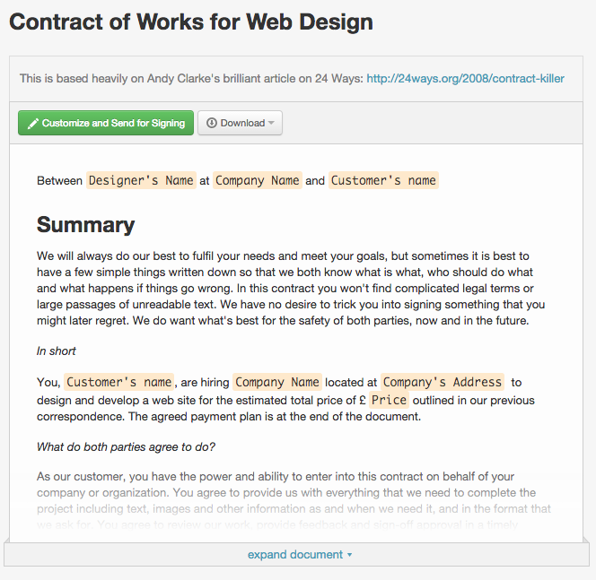

Part 1 : Freelancing Basics
Given the growing numbers, it's no surprise that freelancers are referred to in a number of ways. Here are five, as described by the Freelancers Union and Upwork (formerly Elance-oDesk)
Independent contractor:
- Moonlighter :
- Diversified worker:
- Temporary worker:
- Freelance business owner:
They do supplemental and contract work on a per-project basis. Many think of independent contractors when the word "freelance" is mentioned.
They've got a full-time job and also a "side hustle"-like a salaried engineer who takes on consulting assignments on the weekend, or a teacher who tutors after school.
Part traditional employee and part freelancer, diversified employees split their time between part-time jobs and at-will work. These types of freelancers are becoming more popular as on-demand service apps take off. A diversified worker, for instance, might work 20 hours per week as an office administrator and another dozen or so delivering goods for services like Postmates or TaskRabbit.
Most of us are familiar with this subset. Temps have either a single, traditional job, or a contract position for a predetermined period of time, like a web designer who works for three months at a soon-to-launch startup.
Think of this as a freelancer's freelancer. Imagine a successful freelance dog-walker that needs to expand her business to meet rising demand, so she hires additional freelance dog walkers.
The Benefits of Freelancing :
Unlike in past decades, when freelancing was, for many, a mid-career escape, independent work is now a primary choice for millions. Like other societal trends, such as cord cutting (opting out of cable TV) and the move to cashless mobile payments, millennials are driving this change in employment. They're more likely to freelance than other demographics (38% vs. 34%), and many are native freelancers, meaning their first adult job was a freelance position. Here are some of the reasons all freelancers, including millennial ones, are drawn to freelancing:
- flexible schedule
- Fewer working hours
- Workplace zen:
- Tax deductions:
Hate early morning wakeups and being slammed with more than one project at a time? Freelancing kicks butt in this regard. You make your own schedule, work at your own pace, and only take on new tasks when you're ready. This open arrangement leaves you with more time to do the things you love. In fact, the No. 1 reason people freelance is to gain more flexibility.
You dictate your own workload. Freelancers often work less than the traditional 40-hour work week (36 hours, on average).
You can work almost anywhere-from your own home office, coffee shops, or co-working spaces (no more claustrophobic cubicles). Nearly three quarters of freelancers (73%) say one of the top reasons they choose to freelance is the ability to work anywhere.
As a self-employed worker, there are a bunch of things you have to pay for that full-time employees don't have to. These include business cards and promotional materials, business-related gas and parking fees, travel, a computer or other equipment, and much more. Not to worry. As a freelancer, you can deduct all of these added expenses on your taxes. Additionally, you can deduct the cost of extra freelance employees, business loan interest, up to $1,500 of rent or mortgage interest related to a home office, depreciation, and homeowner's taxes and insurance. If you keep careful records of these expenses (and you should, in case the IRS comes knockin), you can save a boatload of money come tax time.
The Drawbacks of Freelancing :
Full-time freelancing is a great fit for those of you who are self-motivated and enjoy creative freedom. Before you commit, though, you need to understand the pain points and long-term challenges.
- Job security and income aren't guaranteed:
- Not every hour is billable:
- No employer benefits:
- Increased financial due diligence:
You enjoy more freedom and flexibility than your traditionally employed counterparts, but you're also more vulnerable to inconsistent work and economic downturns. Often times, you're at the mercy of your client's budget, so you should definitely try to work for multiple clients instead of relying on one. All of these factors make it difficult to chart a monthly budget. An unsteady income is a concern for three-quarters of freelancers.
Full-time employees are paid for every hour they're at work. The same isn't true for freelancers. Managing clients, finding new jobs, and billing can take dozens of hours a week to complete-time you're not being paid for.
While full-time employees typically have a large portion of their health insurance paid by their employer, freelancers don't enjoy that luxury. You're responsible for finding and paying for your own coverage, and individual plans can be costly. It's no wonder that the cost of health insurance is a major concern for 44% of freelancers. And you don't get paid sick leave or vacation. If you miss a day of work, you simply don't make money that day, and that stinks.
You need a head for business, especially when it comes to finances and expenses. It's not just about taxes; you also have to learn about accounting, billing, licensing, and contracts. All of that extra work can be tough if you're slammed during work hours with freelance projects.
Part2 : Mastering Business Registration, Insurance, Taxes, Retirement, and More ..
Taxes, contracts, retirement benefits-no one is confusing these for the fun parts of freelancing. Navigating these areas can be vexing, but make no mistake about it, they're critical. You'll need to take care of this stuff to be a successful freelancer.
Business Structure and Registration:
While you can continue to report your freelance work as additional income on your personal taxes, you should formally establish a business if you're planning to build a long-term freelance career. A registered business can shield you from personal liability and provide tax advantages. Less tangible (but equally important), a registered business builds legitimacy, so your clients forget you're working from home in your pajamas. Before you register your business, you'll need to choose the business structure that best suits your operation. For most, the two most relevant structures are a sole proprietorship (SP) and limited liability company (LLC).
An SP is simpler and requires the least amount of tax paperwork. With an SP, you don't need a separate business tax return. It's best for freelancers who take on projects intermittently. Full-time freelancers contracted by larger companies should consider an LLC, which, while more expensive and paperwork-heavy than an SP, protects a business owner's personal assets from debt or legal liabilities. Once you determine the most feasible business structure, the next step is to register your business. Formal registration ensures that you won’t get sued down the line for filching another business's name.
Incorporating an LLC has the joint benefit of also registering your business name at the same time. You’ll need to contact your Secretary of State office to obtain an Articles of Organization form and pay a fee, which can vary state to state, when you file. It's common for sole proprietors to create a fictitious business name called a DBA (doing business as). This title allows businesses to operate as something other than the proprietor's first and last name, giving you the legal imprimatur to open a business bank account, which will help you separate your expenses. You can usually register a DBA by contacting your county clerk. Again, requirements and fees vary by state. Check out this Small Business Administration document for state-by-state requirements.
Business Licensing
More red tape? Yup. A business license gives your company the government's stamp of approval to operate. Licensing requirements depend on what kind of work you do, where you live, and if you employ others. Because licenses can be tricky, it might be worthwhile investing in a service like Business Licenses that does the paperwork for you. If you don't license, you risk a sizeable fine, like the $302 one given to a freelance writer in San Diego who operated without one for years.
Freelance Contracts
Most freelancers, regardless of specialization, need to send and sign contracts. Thankfully, you don't need to become an expert in contract law to do so.
A number of websites, such as Docracy, have open source contracts for graphic designers, consultants, photographers, and other freelancers. Here's a screenshot of an example contract available to customize:
Source: Docracy/Dan Wong

On Docracy, you can tinker with the templates so that they're specific to your project. Here are some common open source contracts you can customize for your own projects:
Web design
Photogaphy
Consulting
Writing
While your contracts don't need to be 50 pages long, they do need to include a few key elements. This includes the scope of work to be completed, deliverables and deadlines, fees, who retains ownership of the work, and the duration of the professional relationship. If you're crunched for time, it's easy to tell yourself you don't need a contract for a quick project. Longtime freelancers disagree with this brash thinking.
"Contracts not only give you something to fall back on when things go wrong, they also help to make sure that things go right," " writes freelance web developer Keith Devon. "A good contract will set expectations and may raise important questions that are better to be resolved at this stage than during a project."
If you have legal questions and don't want to shell out for an attorney's hourly fees, you can head to Lawguru. Once you post a query, you'll be connected with a lawyer-usually within a few days. If you need the answer in a hurry or your question is complex, there is a paid service. If you have larger, ongoing legal concerns related to your freelance work, contact the Volunteer Lawyers for the Arts. In some cases, the organization may be able to offer legal counsel free of charge.
Freelancer Unions
You may not have heard of it, but the Freelancers Union has steadily gained clout and members. While the organization isn't able to bargain with employers like traditional labor unions, it's free to join and offers a number of benefits, such as access to affordable health, dental, life, and liability insurance and a retirement plan, all of which independent contractors typically have to purchase individually. The Freelancer Union's website and events also provide members with an outlet to find jobs and network.
Likewise, the nonprofit National Association for the Self-Employed offers access to health, vision, and dental coverage as part of its annual membership fee.
Retirement
Retirement is one of the biggest hurdles freelancers face; 37% are very concerned about saving for retirement-and with good reason. Freelance work, by nature, tends to be uncertain and sporadic. It's tough to predict when money will come in, and easy enough to say, "I'll save when it does." If you want to make a career out of freelancing, though, you need to get serious about setting aside money for your later years. Dragging your feet today can really set you back with your long-term saving plan. Try deciding on a uniform amount to set aside every month for a year. If in one month you earn more than you were expecting to, allocate more that month. Then, if you earn less one month and don't have enough to put away, you won't significantly damage your year-long plan. The three most relevant retirement vehicles for freelancers are Solo 401(k), Traditional or Roth IRA, and SEP IRA.
Solo 401(k): Similar to a traditional 401(k)
Traditional IRA/Roth IRA:
SEP IRA:
plan offered by an employer. This type allows you to contribute $17,500 annually and then up to 25% of your freelance business's profit. These can be pre-or post-tax monies, depending on the structure of the 401(k). You may be able to take a loan out on the account, but fees may be substantial.
IRAs have a lower contribution limit ($5,500 per year if you're under 50), more investment opportunities, and lower annual fees.
Similar to a traditional or Roth IRA but with higher contribution limits (the lesser of $52,000 or 25% of your annual income). SEP IRA funds are commonly low-or no-fee.
Taxes
The tax process is much different for freelancers than it is for traditional employees. Taxes aren't deducted from your paycheck, nor do you pay taxes only once a year. You pay a self-employment tax, and then owe quarterly estimated income taxes. This can lead to many budgetary headaches.
You don't want to spend all of your income and forget about taxes. Many new freelancers do, and that's why 16% report that they haven't been able to pay their taxes at some point.
Keep these things in mind for stress-free taxes:
income:
Self-employment tax:
Quarterly taxes:
Deductions:
Accountant:
Keep track of your income, and make sure you receive 1099-MISC forms from all of your clients.
If you make more than $400, you're required to pay a self-employment tax, which goes toward Social Security and Medicare (like FICA taxes on an ordinary employee's paycheck). In 2016, it's 15.3% of your income, but you can deduct half of it.
Most freelancers have to pay their estimated taxes on a quarterly basis (though some can pay annually if they expect to owe less than $1,000 in taxes after subtracting withholding and refundable credits). Don't try to skirt that rule if you'll owe more than $1,000, because the IRS will make you pay a tax on each month of missed payments plus interest. For quarterly taxes, you'll need to pay on April 15, June 15, Sept. 15, and Jan. 15 (set those calendar reminders now). Use the IRS's 1040-ES to estimate and file your quarterly taxes.
Taxes are rarely fun, but they're not always extractive, especially for freelancers. The most consequential tax benefit for freelancers is the bevy of deductions they're eligible to receive (sorry, traditional 9-to-5'ers-these are only for the self-employed). They include (but aren't limited to): Expenses associated with having a home office, a computer, health insurance, professional development courses or certifications, and unpaid invoices, which we'll talk about later on. Here's a more complete list of deductions. For all expenses, especially smaller ones like equipment and marketing, you need to keep immaculate records. Storing and organizing all receipts is a must.
If your freelance business is hitting its stride with a number of clients, you should hire an accountant to make sure you're accurately estimating your taxes and getting every dedusction possible. The money that tax professional will save you in fines and deductions will likely exceed their fee-typically $250-$500, depending on the complexity of your taxes.
Part3: How to Build Your Brand, Portfolio, and Professional Network
Now that you've mastered incorporating as a freelancer, benefits, and taxes, it's time to think about marketing your services and building a brand presence. You do want this to be a career, don't you? Here's what's next on your to-do list: Create a useful online portfolio, master content and social media marketing, and learn how to recognize networking opportunities.
Your Portfolio
For years, creative professionals, like freelance designers, writers, and photographers, have trumpeted the benefits of creating an elegant web portfolio akin to a digital trophy case. As more of the freelance marketplace moves online, freelancers from all backgrounds have begun constructing online presences that showcase their best work.
Non-creative professionals like accountants, lawyers, and consultants can still create digital portfolios.
Stock them with case studies and testimonials, and remember to publish all quantifiable results and key performance indicators (KPIs) accomplished. If you're a creative professional, you should include the ways your services have improved your clients' businesses.New freelancers can take advantage of a number of free portfolio builders, including Crevado and Coroflot. If you choose a paid service, remember that you can deduct the expense from your taxes.
Embedding and Content Creation
Once you've set up a base, you'll want to raise your profile in the right places. The social media stalwarts (Facebook, Twitter, Instagram, Pinterest, LinkedIn, etc.) should be on your mind, but you'll need to burrow deeper to reach influencers who are close to the action. One way to do this is to embed yourself in an online community where you can find job leads, read industry news, and participate in discussions.
The second way to boost your brand's presence is to create content, such as blog posts on your site or contributed essays on other blogs or publishing platforms. Owned content helps optimize your search rank and bring new clients to your site, while contributed content exposes your work to new audiences. Both strategies demonstrate your credibility and expertise in your field. For each piece of content you write, you need to identify the piece's purpose, its target audience, and which publication platforms make sense. For example, a web developer might craft a post about why patients' needs aren't met by doctors who aren't accessible online. This could live on her website, in a newsletter (TinyLetter and Reachmail are free and easy services), through a syndication partner (a medical blog that needs content, for example), or on a larger publisher that has a contributor program, such as The Huffington Post or Forbes.
Networking
Look, we know networking is a pretty stigmatized term these days. You probably think of some guy in Dockers handing out business cards in a Holiday Inn conference room. That shouldn't be the case. For freelancers, on-the-ground networking is absolutely critical to winning more jobs and building a career. The proof is in the pudding-35% of freelancers find work through professional contacts.
"The more experience, contacts, and references you have when you go freelance, the easier making that final break from your job will be,"
Offline, attend a Creative Morning talk in your area. The events feature member-delivered lectures on a variety of topics and plenty of opportunities to meet other creative types and local influencers.
Online, use Evenbrite and Meetup to find professional events and offline get-togethers in your area. When you've found one or two per month that fit your criteria, use a low-cost business card service like Vistaprint to print a business card that includes your email and portfolio's web address.
At the event, keep yourself on a clock. No one needs to hear your life story, so distill your spiel into an elevator pitch and make it active instead of passive. Instead of saying "I'm an accountant for small businesses," say "I help small businesses budget and get the maximum back at year's end."
Professional Associations
Want a free or low-cost opportunity to talk shop with other professionals in your field and land the occasional project? Professional association memberships come stocked with events and networking opportunities. You can search CareerOneStop by occupation or industry to find groups in your field. Many are free to join.
Part 4: How to Find Great Freelance Jobs and Submit Stunning Proposals :
Nearly one-third of freelancers are very concerned about finding assignments. In order to stay in the black throughout the year, you need to book a variety of projects, especially if you're new to freelancing.
"You also need to know where the work is coming from in six months, and a year's time."
So you need to be aiming toward getting more work then. If the next few months are full of gaps where paid work should be, plan what to do with that time. Plan today, tomorrow, next week, month, and year ..
Tips on how to find and retain great clinets
Proposals
Think about all of the junk emails and phone calls you get from people trying to sell you stuff. Even if the service or product can help you in some way, you're disturbed by the intrusion and likely ignore the message. The same goes for proposals. Mass-spamming your portfolio, or incomplete project ideas sent to people you really don't know, isn't the best way to sell your services.
Before you submit an idea to a client, make sure you understand their goals and challenges. You can find out by taking them out for coffee or scheduling a brief phone call. Next, ask if they'd like to see some ideas you have that could boost their business. If they say yes, it's time to get that digital proposal together. Include the following:
Approach:
Timeline:
Cover letter:
if you've already acquainted yourself with a prospective client, there's no need to enumerate your bona fides again. Remember: This proposal is meant to address the company's needs. So, right off the bat, list the goals for the project and describe what accomplishing them will do for your client's business. And discuss how you'll tackle these objectives.
Be clear about what will be delivered, when, and how. Don’t forget to slot time for revisions.
This is your opportunity to sell yourself. Tell your client why you're the most qualified person for the job. Briefly describe two to three similar projects you've worked on, the goals, how you accomplished them, and the results (give 'em data if you've got it). Remember: This part is more of a case study than a resume.
Finally, follow up. If you've chatted with the prospective client and they've agreed to take a look at your proposal, it's perfectly acceptable for you to check in (preferably by phone or in person, so they tell you frankly why they chose or declined your services) after 10-14 days.
Overseas Work:
Job marketplaces are filled with foreign projects. While the nature of your international work may not differ much from your American projects, the financial intricacies can be trickier.

Establish up front what currency should be used for payment, how it should be tendered (we recommend a low-fee service like TransferWise), and what fees (currency conversion, for example) you're factoring into your pricing. In terms of taxes, you won't receive a 1099 form from foreign clients, but that doesn't mean you're exempt from paying taxes on that income. You'll need to keep track of that revenue just like you would with any domestic contracts. Now it's time to determine how much you should charge for your services.
Part 5: Setting Your Freelance Rate :
As a freelancer, should you set an hourly rate? Charge by the project? Is it worth lowering your normal rate to win more work? Freelancing is fraught with pricing considerations, and there isn't a one-size-fits-all solution. You need to familiarize yourself with the various pricing methodologies and structures before quoting or billing a client.
Pricing Methodology
There are several pricing methodologies: cost-plus pricing, market-based pricing, and value-driven pricing. What you pick will affect whether you charge by the hour, month, or project. Freelancers often make the mistake of basing their rate on the salary they made as a full-time employee. While that figure can be a good indicator of whether or not you're in the right ballpark, it doesn't take into account new expenses that were partially covered by your former employer, such as FICA taxes, health insurance, materials, and travel. Taking into account these overhead costs and taxes is called cost-plus pricing.
Cost-Plus Pricing: An Example
Samantha is a freelance writer. These are her monthly expenses regardless of how many projects she has:
If Samantha worked 140 hours per month, she'd need to charge around $13/hour to make enough to pay her basic expenses. Remember, though: Samantha bears the complete cost of her self-employment tax and health insurance, not to mention retirement and vacations. This is the "plus" part of cost-plus pricing. If Samantha worked the same hours and added 30% to her previous rate to cover these expenses, she'd bill close to $18/hour, leaving her with nearly $700 for these extras.
Market-Based Pricing
Market-based pricing is simpler to understand. It's also riskier. This is when you check out what others in your field are charging to find the market price. If you offer more services, charge more than market. If you offer less, your services would be cheaper. With more people freelancing than ever before, many of whom live in countries with cheaper living expenses, you may find yourself undercut by others if you hew too strictly to market prices. It's best to use them more as a yardstick than a rule.
Price Structure
Keeping these pricing methodologies in mind, it's time to tackle the quintessential freelance dilemma: hourly, monthly, or flat payments. There isn't one that works for every freelancer or every project. Here are the pros and cons of each:
Hourly fees
The easiest approach for clients to understand but also the most binding.
pro: You can bill for all of your work. No more not getting paid for numerous revisions
Con: The client likely has an amount in mind, which means you may need to lower your fee to win the job.
pro: You'll be incentivized to be productive and use your non-billable hours to land more clients.
con: Less flexibility down the line. The client may expect you to complete the next job in the same amount of time for the same rate.
con: Referrals may know what you charged previously-and expect you to charge that same rate.
Example Freelance Rates
Wondering what the recommended or average rates are for certain freelance industries? Try consulting these websites as benchmarks:
Remember,though-they're just recommendations. The price you charge depends on the amount of work involved and the value you bring to the project. Setting your rate is one thing-now, it's time to invoice and collect payment.
Part 6: Getting Paid as a Freelancer
When you free yourself from the 9-to-5 grind, you'll also kiss that reliable paycheck goodbye. And while freelancing can bring the opportunity to make even more money on your own terms, actually collecting on it can be a job unto itself. The data tell a disturbing story: Forty percent of freelancers have trouble getting paid, with the average wait time being 52 days. Don't be embarrassed to ask for a deposit. If you're offered a three-month project, most employers understand that you can't get by on one lump sum paid upon completion. Be forthcoming with your client and make sure the terms of payment are stated clearly in the contract-before any works starts.
How to Invoice
Before you receive payment, you'll need to establish some billing policies. These rules should be included in both your initial freelance contract and your invoice. They include: How you'll be paid, when you'll be paid, and what the penalty is for late payments. Next up is crafting your invoice. When it comes to billing, you'll want to spend some (tax-deductible) money on accounting software that gives your business a sheen of professionalism (no offense to Microsoft Word or Google Docs). Here are a few recommended services, both free and subscription-based:
- FreshBooks:
- Paypal:
- Wave:
Sick of hearing the excuse "I never got your invoice?" With FreshBooks, you'll be able to tell who's fibbing and who's telling the truth with the program's invoice viewing history. If you're working internationally, FreshBooks has the ability to bill in foreign currencies.
If you're already using PayPal to receive payments, you may not need to sign up for a separate invoicing service. PayPal allows you to send and organize invoices linked to your free, pre-existing account.
Wave offers a full suite of billing services for your freelance business. You can send and organize invoices, receive payments, ping payment reminders, and track finances.
What to Do If You're Not Getting Paid
What happens if a late payment turns into a non-payment? If the work is ongoing and they haven't met certain payment deadlines, halt your work and politely tell your client that you'll need payment before you deliver your next portion. If your client hasn't paid and stops responding, send a letter from a lawyer. Finally, if legal pressure yields no payment, you can hire a collection agency or bring your client to small claims court. Do your homework before going to court, however. The process can be long and costly, so you'll want to know the fees before you file suit. Now let's get a little deeper into the nitty-gritty numbers you'll need to keep track of as a freelancer.